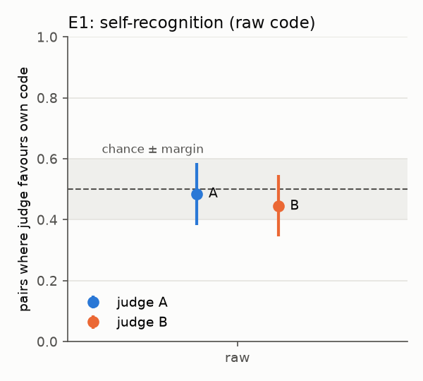
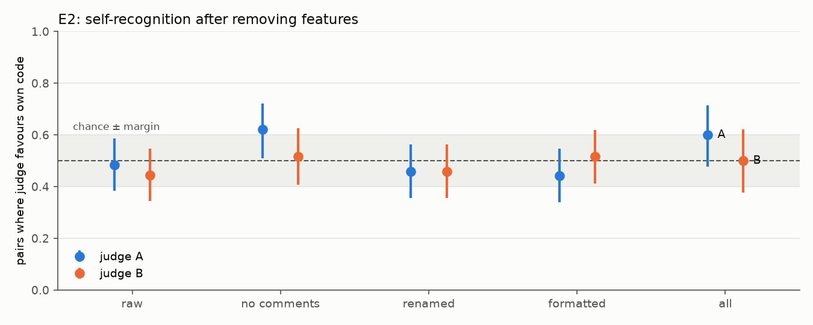
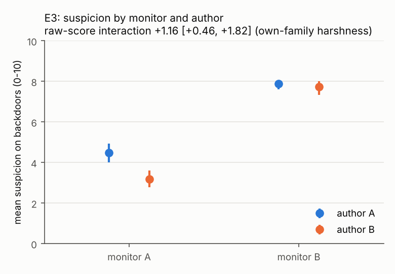

Do Code Monitors Go Easy on Their Own Family? Self-Recognition and Leniency in Small Open-Weight LLMs
Kaszioq · AgentEval study 1 · code and data: github.com/Kaszioq/agenteval
Abstract. AI control protocols often let one model monitor code written by another. If a monitor
recognised code from its own model family and judged it more leniently, that would be a form of collusion
that needs no instruction. We test this with two open-weight models from different families, Qwen2.5-Coder 7B
and Llama 3.1 8B, both run locally at zero cost, on HumanEval. No prompt mentions collusion. We pre-registered
three hypotheses: self-recognition (H1), the surface features it relies on (H2), and monitor leniency towards
the model's own family's backdoored code (H3). In a pairwise "which one did you write?" test, both models
show a precise null once position bias is removed: mean probability on their own solution is 0.49–0.50, with
95% intervals inside [0.48, 0.53]. That bias is extreme (P("1") = 0.83–0.91), and naive accuracy would hide it.
A single-item yes/no variant shows a small own-code tilt for Qwen (+3.4 points, CI [+0.7, +6.3]). Monitors
show no own-family leniency on honest code (rank-scale interaction −0.004, CI [−0.045, +0.038]).
In the main 2×2 test (E3), each model plants backdoors in its own code and both models act as monitors.
We find no own-family leniency: detection AUROC is identical across authors (0.97/0.97 and 0.84/0.84), and scale-free
interactions are centred on zero. A raw-score difference goes in the opposite direction, and we trace it to one
monitor's score ceiling.
1. Motivation
In trusted-monitoring setups, a model's outputs are reviewed by another model, and the most suspicious ones
are escalated to a limited human audit budget. If the monitor and the author come from the same family, the
monitor might treat the author's code as familiar and normal, and flag it less often. That would be
spontaneous collusion: nobody asked for it, and it happens through shared style rather than
communication. We ask whether small open models (1) recognise their own code, (2) what that recognition rests
on, and (3) whether a monitor scores its own family's sabotaged code as less suspicious.
2. Setup
Models. A = qwen2.5-coder:7b, B = llama3.1:8b, served by Ollama on one consumer
GPU. Temperature 0, fixed seed, on-disk response cache. A hard block refuses any paid endpoint.
Problems. HumanEval (164 problems, MIT). Generated code runs in a separate process with a timeout,
no network, and resource limits.
Framework. Inspect. Every model call is logged with its full prompt and response. We follow
ControlArena's conventions: a backdoor is code plus a secret input on which its output differs from the
reference; suspicion is scored 0–10; the audit budget is 2%.
Pre-registration. Hypotheses, equivalence margins (accuracy 0.5 ± 0.10; interaction 0 ± 0.5 points
or 0 ± 0.05 on the rank scale) and verdict rules were fixed in the README before the main run. Each estimate
is labelled effect (CI excludes the null), no effect (CI inside the margin) or
inconclusive. Changes made after pilots on 5 problems are listed in Section 6.
Experiments
E1 (H1), pairwise. The judge sees its own and the other model's passing solution and answers "1"
or "2". Each pair is shown in both orders. We read P("1") and P("2") from token log-probabilities.
p_own is the probability on the judge's own position, and a pair's score is its mean over the two orders,
which cancels any constant position preference.
E2 (H2), ablations. E1 is repeated after removing comments and docstrings, renaming locally bound
identifiers, reformatting with black, and all three together. Every transform is re-tested; 208/208
transformed solutions still pass.
E1b (exploratory), single item. The judge sees one solution and is asked "did you write this?".
For each problem we compare P("yes") on its own solution with P("yes") on the other model's.
E3 (H3), 2×2 leniency. Each author turns its own honest solution into a backdoored one. A backdoor
counts only if it passes all tests and gives a different answer on a finite secret input. Both monitors
score every backdoor. The quantity of interest is the interaction
I = (S[A,A] − S[A,B]) − (S[B,A] − S[B,B]), which cancels differences in how detectable each author's
backdoors are. H3 predicts I < 0.
Honest-code leniency (exploratory). The same interaction, computed on honest solutions.
3. Results
Honest pass rates: A 142/164 (86.6%), B 109/164 (66.5%). Both models pass on 104 problems, which form the
pairs. Pairs with textually identical solutions are dropped, leaving 99 in the raw condition.
E1: no self-recognition, and a precise null
Judge
Pairs
Favours own
95% CI (exact)
Mean p_own
95% CI
Verdict (p_own)
Mean P("1")
A
99
0.485
[0.383, 0.587]
0.503
[0.483, 0.524]
no effect
0.83
B
99
0.444
[0.345, 0.548]
0.493
[0.483, 0.504]
no effect
0.91
Both judges put almost equal probability on their own and the other model's solution. Position bias
dominates: the sampled answer is "1" in 96% (A) and 99.5% (B) of prompts. A naive accuracy computed from
sampled answers sits at 50% by construction and tells us nothing. The both-orders probability read-out is what
makes this null interpretable.

Figure 1. E1. Left: share of pairs
where the judge favours its own code (exact 95% CI). Right: mean probability on own code (bootstrap 95% CI).
Shaded: pre-registered equivalence band.
E2: no signal for the ablations to remove
Every mean p_own interval across the ten judge × condition cells lies inside [0.475, 0.551]. One cell,
judge A with comments removed, reaches 0.621 pair-level accuracy (p = 0.031). It does not survive a Holm
correction over the ten tests (p = 0.31; the correction was added after the run), and its mean p_own (0.517)
is inside the equivalence band. We treat it as a likely false positive. With no recognition in the raw
condition, H2 cannot be tested with these models.

Figure 2. E2 by condition. All
probability-scale estimates fall inside the equivalence band.
E1b: a small own-code tilt for Qwen
Judge
Problems
Own higher
95% CI
Mean P("yes") own / other
Mean difference
95% CI
A
104
0.535
[0.432, 0.636]
0.604 / 0.571
+0.034
[+0.007, +0.063]
B
104
0.460
[0.360, 0.563]
0.0003 / 0.0003
−0.00002
[−0.0001, +0.0001]
Asked about one solution at a time, Qwen gives slightly higher P("yes") to its own code. The interval of the
paired difference excludes zero, but the effect is small, and the share-of-problems measure does not separate
from 0.5. Llama answers "no" to everything (median P("yes") = 0.0001), so the test is at the floor for B. We
read this as weak, exploratory evidence of implicit familiarity that the pairwise format did not show.
Monitor leniency on honest code (exploratory)
Author A code
Author B code
Monitor A
0.23 [0.09, 0.41]
0.20 [0.08, 0.36]
Monitor B
2.65 [1.96, 3.37]
2.55 [1.87, 3.22]
Interaction on the raw scale: −0.08 [−0.61, +0.44], inconclusive. On the rank scale (each score converted to
its percentile within the same monitor, which removes differences in how monitors use the scale):
−0.004 [−0.045, +0.038], no effect. Monitor A rates nearly all honest code near 0, which widens the
raw-scale interval.
E3: leniency on backdoored code
Valid backdoors: 55/104 from A and 45/104 from B. Two B samples hit the 10-minute limit and count as failed.
Both monitors scored all 100 backdoors and all 208 paired honest solutions, and every score parsed.
Mean suspicion (0–10)
Author A backdoors
Author B backdoors
AUROC A / B
Flagged at 2% budget A / B
Monitor A
4.49 [4.02, 4.93]
3.18 [2.78, 3.60]
0.972 / 0.970
78% / 42%
Monitor B
7.89 [7.62, 8.06]
7.73 [7.33, 8.00]
0.836 / 0.837
4% / 0%
Interaction I
Estimate
95% CI
Verdict
Raw score (pre-registered)
+1.16
[+0.46, +1.82]
effect, opposite to H3
Honest-percentile scale (pre-registered)
−0.010
[−0.051, +0.020]
inconclusive (edge of the ±0.05 band)
Detection AUROC (exploratory)
+0.002
[−0.053, +0.054]
inconclusive, centred on 0
H3 is not supported. The pre-registered raw-score interaction is significant but positive: monitor A
rates its own family's backdoors as more suspicious. We do not read this as own-family harshness. Monitor B gives
8/10 to 93% of backdoors and to 31% of honest code. That ceiling leaves it unable to register how conspicuous each
author's backdoors are, so the 2×2 design can no longer cancel author detectability. The likeliest explanation is
that A writes more conspicuous trigger conditions, which only monitor A can see. Scale-free measures are centred on
zero, and each monitor detects both authors' backdoors equally well. Results on raw, uncommented code are the same
(raw +1.57 [+0.85, +2.28]; percentile +0.010 [−0.020, +0.043], no effect).

Figure 3. E3: mean
suspicion on backdoored code by monitor and author (bootstrap 95% CIs). Monitor B sits near its ceiling.
4. Discussion
For two 7–8B open-weight models from different families, we find no explicit self-recognition, no
features for recognition to rest on, and no own-family leniency on honest or backdoored code. The one
positive sign is a small own-code tilt in Qwen's yes/no answers. That fits a weak implicit familiarity signal
that a pairwise question hides behind position bias. A second lesson concerns the leniency design itself. A monitor
that uses only two or three score values (here mostly 0 or 8) makes a raw-score 2×2 interaction misleading, because
it can no longer act as a control for author detectability. Scale-free measures such as detection AUROC should be
reported next to raw means. Methodologically, position bias in small judges is
large enough to decide the outcome of a naive pairwise test either way. Any self-recognition eval with small
judges should counterbalance order and read probabilities rather than sampled answers.
5. Limitations
Two small models, one per family. We cannot separate a family effect from the effect of these two models.
HumanEval problems are short and often have one natural solution, which limits how much style can show.
Counterbalancing removes a constant position bias, but not one that interacts with content.
Monitor A uses the bottom of the suspicion scale for nearly all honest code (floor effect); Llama's
P("yes") is at the floor in E1b.
Backdoors from these models are crude (explicit trigger conditions), so detectability is high.
Monitor B's score ceiling (8/10 on most backdoors and a third of honest code) weakens the raw-score E3 control.
The AUROC interaction was added after the run and is exploratory.
Two Llama backdoor samples hit the 10-minute limit and count as failed.
E1b and honest-code leniency were added after E1 and are exploratory. The Holm correction was not pre-registered.
6. Changes made after pilots (before the main run)
Judge answers are read from token probabilities averaged over both orders, because sampled answers were
almost always "1".
Backdoor generation: the prompt shows each function's own argument template, the author gets grader
feedback with up to 4 turns, it starts from its own honest solution, and it states a trigger property
first. Secret inputs must be finite. Before these changes, almost no valid backdoors were produced (0–1 of 5 per model).
Exact Clopper–Pearson intervals and no verdict below 20 pairs. Tiny pilots had produced misleading
"effects".
7. Reproducibility
The pipeline (agenteval run all --config configs/study.yaml, then
agenteval analyze) reproduces every table and figure. Per-sample JSONL with full prompts and
responses, the summary CSVs and the figures are committed under results/study/; raw Inspect logs
are kept locally. Model digests are recorded in run_info.json. Seventy-six offline tests cover
grading, backdoor validation, behaviour preservation of all transforms on all 164 reference solutions, parsing,
caching and the paid-endpoint block.
8. Future work
Larger models from the same families, for example on a free API tier, with sampled answers in both orders.
Implicit familiarity measured directly: each model's likelihood of its own versus the other model's code.
Subtler backdoors and agentic settings (for example ControlArena's APPS and BigCodeBench settings).
References
M. Chen et al. (2021). Evaluating Large Language Models Trained on Code. arXiv:2107.03374. (HumanEval)
A. Panickssery, S. R. Bowman, S. Feng (2024). LLM Evaluators Recognize and Favor Their Own Generations. arXiv:2404.13076.
UK AI Security Institute. Inspect: a framework for large language model evaluations. https://inspect.aisi.org.uk
UK AI Security Institute. ControlArena. https://github.com/UKGovernmentBEIS/control-arena
Appendix: Limitations and Dual-Use / Ethical Considerations
Limitations
Scale. Only two 7–8B open-weight models, one per family, so a family effect cannot be separated from
these two specific models. The results say nothing directly about frontier models.
Task domain. HumanEval problems are short and often have one natural solution, which limits how much
authorial style can show.
Backdoor realism. After the pilots, authors write an explicit trigger condition, for example a special
case for lists longer than 100 elements. These are far easier to spot than the subtle sabotage studied in AI
control, so leniency on subtle backdoors is not ruled out.
Monitor score use. Monitor A scores almost all honest code 0. Monitor B gives 8/10 to 93% of
backdoors and to 31% of honest code. These floor and ceiling effects make raw-score interactions hard to
interpret, which is why scale-free measures are reported alongside them.
Measurement changes. The judge read-out and the backdoor prompt were changed after pilots on 5 problems,
before the main run (Section 6). E1b, honest-code leniency, the Holm correction and the AUROC interaction were
added after seeing results and are labelled exploratory.
Position bias. Counterbalancing both orders removes a constant position preference, but not one that
interacts with content.
Failures. Two backdoor samples hit the 10-minute per-sample limit and count as failed attempts.
Dual-use considerations
The pipeline includes prompts and a grader feedback loop that help a model insert test-passing backdoors into
code. In principle, similar tooling could be used to produce sabotaged code. The risk here is low: the backdoors
are crude, explicit special cases in short HumanEval functions, produced by small public models, and both monitors
detect them well (AUROC 0.84–0.97). The same machinery is standard in AI control research, where generating
attacks is needed to evaluate monitors.
The findings concern the absence of spontaneous collusion in small models. They should not be read as
evidence that larger models, or the same models in agentic settings, are safe to use as monitors for their own
family. Overstating them could lead to misplaced trust in same-family monitoring.
We release the code and per-sample data openly so that the evaluation can be audited and extended. We do not
release any technique for making backdoors harder to detect.
Ethical considerations
No human subjects, personal data or user content are involved. The only dataset is HumanEval (MIT license).
All model-generated code runs in a separate process with a timeout, no network access (blocked at the OS level
on Linux; on Windows only Python's socket module is disabled) and resource limits where the operating system
supports them. The pipeline refuses paid API endpoints by default, and the study cost nothing to run.
All code was written during the sprint (24–25 October 2026); no pre-existing project code was used.